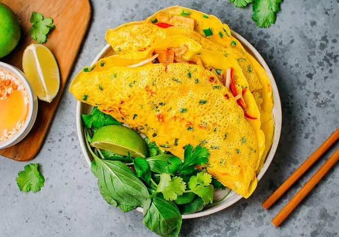

Vào bếp trổ tài làm bánh xèo miền Tây giòn ngon, ai ăn cũng khen !
: 18/11/2021

Bánh xèo miền Tây kết hợp các nguyên liệu đặc trưng của ẩm thực dân gian Nam Bộ được rất nhiều người dân và bạn bè quốc tế ưa thích. Thay vì phải ghé hàng quán, bạn có thể tự tay vào bếp với cách làm bánh xèo miền Tây chuẩn vị, giòn tan sau đây từ Mekong Escape.
Nội dung chính
- Nguyên liệu làm bánh xèo miền Tây
- Sơ Chế Nguyên Liệu
- Cách đổ bánh xèo miền tây
- Mẹo gán bánh xèo miền tây,không ngán dầu mỡ
1. Nguyên liệu làm bánh xèo miền Tây

- 200g bột bánh xèo
- 50ml nước cốt dừa
- 300g tôm sú
- 300g thịt ba chỉ
- 300g nấm rơm
- 2 củ hành tây
- 1 củ cà rốt
- 1 củ cải trắng
- Xà lách, rau cải xanh, rau thơm, giá đỗ, hành lá
- Gia vị: hạt nêm, bột ngọt, muối, nước mắm, bột nghệ, giấm
2. Sơ chế nguyên liệu
Bước 1: Sơ chế nguyên liệu
-
Thịt ba chỉ tươi mua về rửa sạch, cắt thành những miếng mỏng vừa ăn. Nên chọn thịt ba chỉ tươi ngon sáng màu, có độ đàn hồi tốt.
-
Tôm sú mua về, lột vỏ, cắt phần râu cứng, rút chỉ đen ở lưng. Rửa sạch lại với nước.

-
Cho tôm, thịt ba chỉ vào 1 cái tô, ướp cùng ½ muỗng hạt nêm, 1 muỗng tiêu xay. Trộn đều và ướp trong khoảng 15 phút cho thịt và tôm thấm gia vị.
-
Bóc vỏ hành tây, rửa sạch và thái thành lát mỏng.
-
Nhặt gốc, bỏ lá úa, rửa sạch hành lá và thái khúc nhỏ.
-
Cà rốt, củ cải trắng gọt sạch vỏ, rửa sạch rồi bào sợi.
-
Rau thơm, giá đỗ rửa sạch, ngâm với nước muối loãng khoảng 15 – 20 phút. Vớt ra để ráo nước.
Bước 2: Pha bột bánh xèo
- Hòa tan nước cốt dừa cùng khoảng 400ml nước lọc. Cho bột bánh xèo vào.
- Nêm nếm gia vị cùng 1 muỗng bột nghệ, một ít hạt nêm, muối, rắc hành lá. Khuấy đều cho đến khi bột mịn hoàn toàn và không còn vón cục.
- Để bột nghỉ khoảng 20 – 30 phút cho bột nở hoàn toàn.
Lưu ý: Bột bánh xèo đóng gói sẵn thường đã thêm sẵn gia vị, nên bạn không cần thêm quá nhiều. Chú ý không nên pha bột quá đặc làm vỏ bánh bị dày và lâu chín.
Bước 3: Xào nhân bánh xèo

- Bắc chảo lên, đổ dầu ăn vào, đến khi sôi thì cho thịt vào xào săn với lửa nhỏ.
- Khi thịt đã chín tới thì vớt ra 1 cái bát. Cho tôm vào, xào trong khoảng 3 – 5 phút cho tôm chín thơm.
Bước 4: Cách làm nước chấm và đồ chua ăn kèm
- Pha nước chấm bánh xèo: Trong lúc đi chiên bánh, bạn có thể pha nước chấm bánh xèo theo tỉ lệ sau:
- 3 muỗng đường
- ½ chén nước mắm
- ½ chén nước ấm
- 1 muỗng nước cốt chanh
Hòa trộn tất cả nguyên liệu rồi cho thêm tỏi, ớt băm nhỏ vào là hoàn thành.
- Chế biến đồ chua ăn kèm: Củ cải trắng và cà rốt thái sợi cho vào tô, ướp với:
- 2 muỗng đường
- 5 muỗng giấm
- 200ml nước lọc
Trộn đều rồi để khoảng 10 phút để cho củ cải, cà rốt mềm ra và ngấm vị.
3. Cách đổ bánh xèo miền Tây
- Bắc chảo lên bếp, đổ 1 muỗng dầu ăn vào đến khi sôi thì đổ 1 vá bột vào. Nghiêng chảo để lớp bột tráng đều khắp chảo.
- Múc tôm, thịt, hành tây và một ít giá lên trên bột bánh. Đậy vung khoảng 30 giây cho bột chín.

- Chiên bánh đến khi vỏ bánh vàng giòn. Gấp đôi bánh và tiếp tục chiên phần còn lại sao cho bánh giòn đều 2 mặt.
- Chiên bánh tương tự đến khi hết lượng bột và lượng nhân đã chuẩn bị.
- Gắp bánh ra đĩa và thưởng thức ngay khi nóng cùng rau thơm. Chấm cùng nước mắm chua ngọt và đồ chua ăn kèm thì ngon hết sẩy.
Lưu ý: Bạn có thể xào qua giá với dầu hoặc trụng sơ qua nước sôi cho chín nếu bạn không ăn được giá sống. Có thể dùng mỡ heo để chiên bánh xèo giúp bánh béo ngậy và giòn hơn.
4. Mẹo rán bánh xèo miền Tây giòn lâu, không ngấm dầu mỡ
Bánh xèo thơm ngon, dễ chế biến nhưng ăn nhanh ngán bởi lượng dầu mỡ quá nhiều. Lưu ý 1 số mẹo dưới đây để bánh xèo giòn rụm, không ngấm dầu mỡ nhé!
- Nên cho thêm 1 chén bia vào hỗn hợp bột để khi chiên lớp vỏ bánh sẽ giòn ngon hơn. Đây là cách làm bánh xèo giòn rụm, không ngấm nhiều dầu mỡ được nhiều người đúc kết lại và áp dụng.
- Có thể dùng mỡ heo để chiên bánh xèo, bánh sẽ giòn hơn và thơm hơn. Bên cạnh đó, khi chiên bánh xèo, bạn không được để lửa to dễ khiến vỏ bánh cháy sém, thịt dai và không ngon.
- Pha bột bánh xèo đúng tỉ lệ sẽ quyết định đến độ giòn ngon và chất lượng bánh. Tỷ lệ bánh chuẩn là:
- 500gr bột gạo
- 1 muỗng cà phê bột nghệ
- 250ml nước
- 50ml nước cốt dừa
-
100ml bia/soda (nước có ga khác)
- Trong lúc chiên bánh, nên dùng vá múc 1 lượng bột bánh vừa được pha loãng. Rót chầm chậm từ trên xuống để quan sát độ lỏng của bánh.
- Quá trình sơ chế và xào nhân bánh xèo nên xào ở lửa lớn vừa, xào vừa chín tới thì vớt ra. Để nhân ráo, không bị ứ nước. Như vậy, khi chiên vỏ bánh sẽ không bị bở, ngấm nước và giòn lâu hơn.
Bánh xèo miền Tây là một trong những nét đẹp văn hóa ẩm thực độc đáo của Việt Nam. Vừa là món ăn chính độc đáo, vừa là món ăn vặt buổi xế chiều. Vào bếp trổ tài ngay với cách làm bánh xèo miền Tây cùng những nguyên liệu tươi ngon, đảm bảo chất lượng qua Mekong Escape nhé!